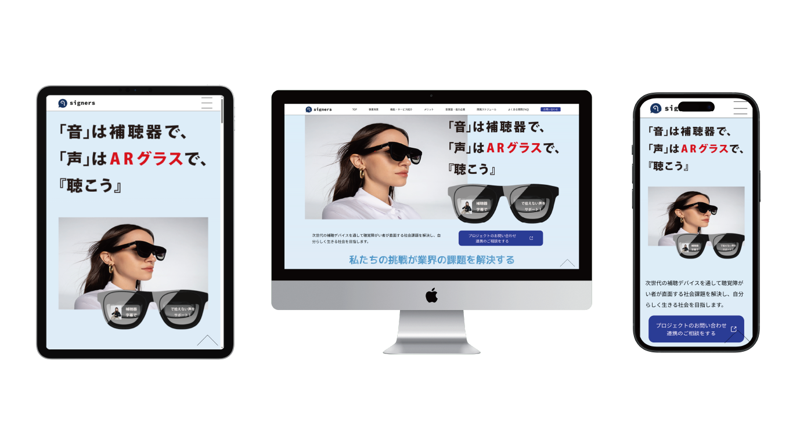
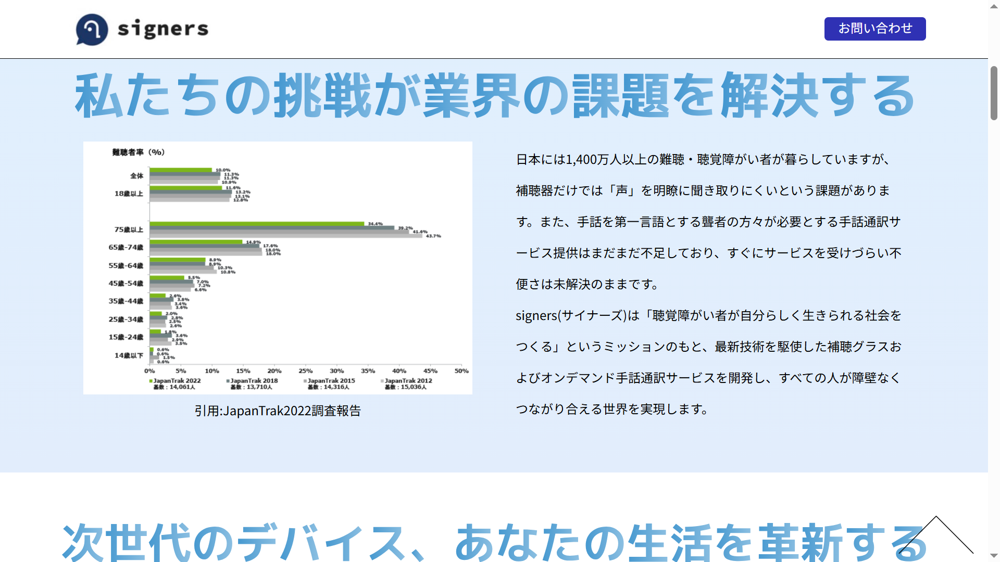
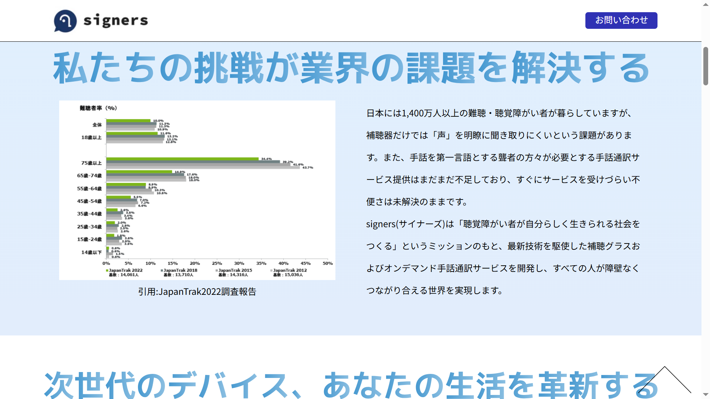
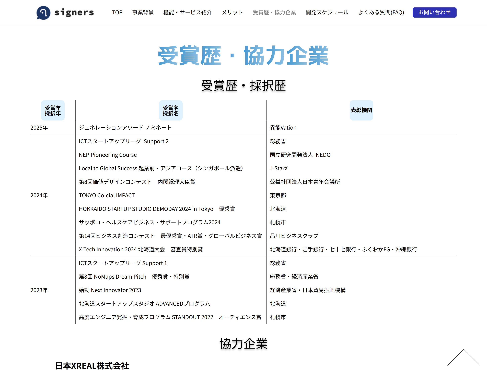
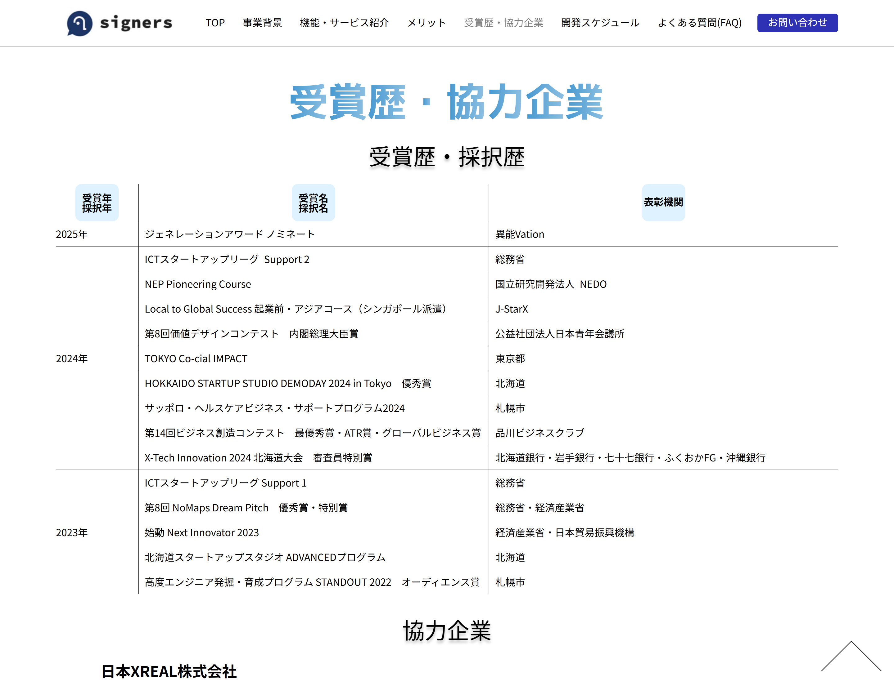

【デジタルハリウッド中間課題】
signers 様
LPサイト

OVERVIEW
signers様の新規立ち上げLPサイトです。
補聴グラスを用いたオンデマンド手話通訳サービス事業立ち上げのため、事業背景から事業計画までターゲットユーザー(手話通訳サービスを必要とする企業‧自治体‧個人)が知りたい情報を掲載しています。
- 担当範囲：ディレクション・デザイン・コーディング
- 使用ツール：HTML・CSS・JavaScript・jQuery・illustrator・Photoshop・Figma
- 制作期間：2ヶ月
企画書を見る
PROCESS
目的・ターゲット
目的
会社及び新規事業内容の紹介
ターゲット
手話通訳サービスを必要とする企業・自治体・個人
クライアント様からの要望
- 硬式が打てることをアピールしてほしい（硬式よりも軟式のほうが稼働が多い）
- 信頼感・今後の開発への期待感・実現可能性を理解できるLPサイト
- 信頼感・落ち着いたデザイン
課題
ターゲットユーザーの
信頼感の構築
ターゲットユーザーにとって何がネックになっているかを想定しました。その結果、新規事業に対する不安感があると想定し、ターゲットユーザーがどうすればこの事業に協業したい・利用したいと思われるかを課題としました。
解決策
ターゲットユーザーが抱える
不安・疑問の解決
今回の目的と課題、そしてターゲット・ペルソナ像から、他社サイトを収集・分析した上で、解決案を提案いたしました。
情報面
ターゲットに事業内容を理解してもらうため、サイト構成を
- 起：ターゲットユーザーに取り巻く状況
- 承：サービス内容説明
- 転：事業の信憑性(受賞歴‧協力企業)の説明
- 結：事業計画説明
のようにターゲットユーザーが抱える不安や疑問を順序立てて解決することを意識して設計しました。
デザイン面
- ゴシック体フォント・青系の背景色を用いて生活に不便を感じる人たちがsigners様のサービスによって快適な生活が送れることを連想させました。
- 写真‧ボタンは丸みを帯びた形状にすることで、柔らかく・安心感を与える印象を与えさせました。
配色
フォント
- Noto Sans JP
POINTS
コンテンツ領域を考慮した
ヘッダー設計
PC版サイト(ディスプレイ横幅：1024~1439px)のヘッダーが2段構成のため、スクリーン上で見られるコンテンツ領域の縮小が懸念されました。サイトの見やすさを向上させるため、ヘッダーの機能をjQueryを用いて下記の通りにスクロール量に応じて実装しました。
【ヘッダー機能】
-
下方向へのスクロール
⇒ヘッダー下部のナビゲーションが上部方向へ折りたたむ -
上方向へのスクロール‧ヘッダー上へのマウスオーバー
⇒ナビゲーションが表示される
 

レスポンシブ対応に伴う
受賞歴・採択歴デザイン
受賞歴・採択歴を表ベースで表示させることを試みましたが、スマホ・タブレット版では横へのスクロールが余儀なくされ操作性に課題がありました。そのため、受賞年ごとに縦表示することで縦方向のみで情報が見られるように設計しました。
 
